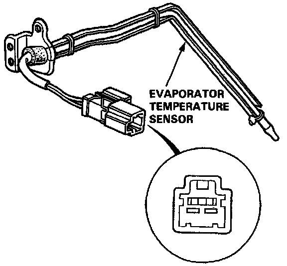

Component Test

Compare the resistance reading between terminals of the evaporator temperature sensor with the specification shown in the graph: It should be within specification.
NOTE: Dip the sensor in ice water and measure the resistance. Then pour hot water on the sensor and check for change in resistance.

CAUTION: The sensor uses a thermistor which car be damaged if a high current is applied to it during testing. Therefore, use a circuit tester that puts out a measuring current of 1 mA or less. (At the 20 K Ohm range)